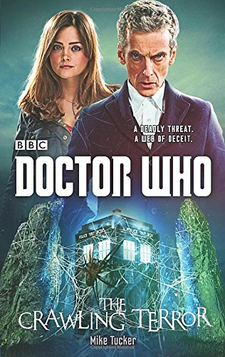

|
The Crawling Terror
|
BASIC PLOT DOCTOR COMPANIONS MATERIALISATION CIRCUIT Pgs 134-135 Ringstone, March 1944. Pg 174 In the car park of the science park, Ringstone, 2014. PREPARATORY READING CONTINUITY REFERENCES Pg 21"The Doctor had risen to his feet and was using the sonic screwdriver to scan the air above his head." Fury From the Deep et al. "Checking to see whether there's a trapped spacecraft hovering in the hyperspatial dimension above the circle or not." The Stones of Blood. Pg 22 "Since his regeneration, the Doctor had become decidedly prickly in his dealings with anything remotely military. That in itself might not have been a problem if it wasn't for the fact that her new boyfriend - her potential new boyfriend - was an ex-soldier." Into the Dalek. Pg 64 "Sometimes he didn't think the people at UNIT lived in the real world." The Invasion et al. Pg 97 "'Who taught you how to do that?' 'A young lady called Jenny Flint.'" A Good Man Goes to War et al. Pg 108 "'Judson?' 'Yes, before he got whisked off to work on the ULTIMA project.'" The Curse of Fenric. But see Continuity Cock-ups. Pg 121 "'Can you ride a motorbike?' he asked, holding up a set of keys. The Doctor grasped them gratefully 'Yes!' His face immediately fell. 'No! I think so. Maybe.' He glared angrily at Robin, as if this confusion was somehow his fault. 'I don't know! I haven't had a proper chance to find out what this body can do yet.'" The Bells of Saint John. Pg 130 "Charlie cut the engine. The Doctor was out of the sidecar in a flash, closing the door and hurryoing over to the control console. 'Clara does that with a lot more style and a lot less noise.'" The Day of the Doctor. Pgs 219-220 "You will carry on with your allotted tasks, you will ignore me and anything I do. Indicate your understanding.' As one, the shambling technicians nodded." Pyramids of Mars. Pg 245 "Department C-19 are in charge." Time-Flight. Pg 246 "He had moved here as soon as the soldiers had started arriving, muttering something about 'never forgiving Winston Churchill for offering that reward'." Victory of the Daleks. OLD FRIENDS AND OLD ENEMIES NEW FRIENDS AND NEW ENEMIES Josef Razowski appears in the epilogue but doesn't interact with anyone else in the book.
CONTINUITY COCK-UPS PLUGGING THE HOLES [Fan-wank theorizing of how to fix continuity cock-ups] FEATURED ALIEN RACES Pg 31 A giant crane fly. Pg 51 A giant spider. Pg 58 A giant beetle. Pg 79 Giant ants. Pg 102 A variety of giant hybrid insects. Pg 153 A giant scorpion. Pg 155 Wyrresters, mutant arachnids that look like scorpions with razor-sharp claws. FEATURED LOCATIONS Pg 135 Ringstone, March 1944. Pg 196 The planet Typholchaktas, 2014. IN SUMMARY - Robert Smith? |
|
 |